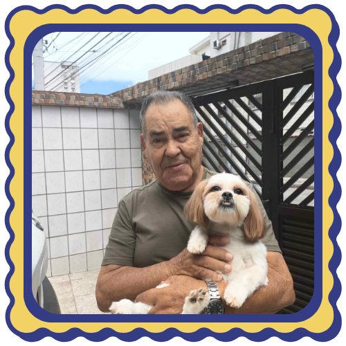

Antigamente, Horácio rendou uma pequena cantina nos armazéns 33 e 34 do complexo portuário de Santos. Ele via a área como promissora para atrair trabalhadores e moradores que procuravam uma refeição rápida e acessível. O local operou lá por muitos anos, servindo refeições simples e mantendo um público fiel.
Por volta de 2011, Horácio passou o negócio para seu filho Rogério, que já trabalhava ao lado dele. Rogério assumiu a administração mantendo o modelo de negócio do pai, sem grandes alterações. No entanto, por razões práticas e estruturais, a cantina mudou de endereço, mudando-se para o armazém 32, próximo dos originais.
A mudança não trouxe impactos significativos no dia a dia do negócio, e a cantina continuou funcionando com a mesma clientela e o mesmo perfil.